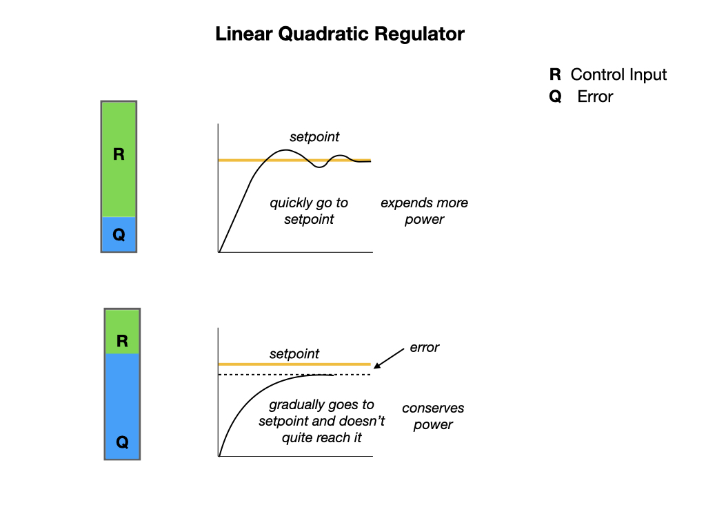

Linear Quadractic Regulator LQR
Linear Quadratic Regulators work by finding trade-off that drives our system to its desired setpoint while using the minumum control effort. For example, a spaceship might want to minimize the fuel it expends to reach a given reference, while a high-speed robotic arm might need to react quickly to disturbances and reach the setpoint quickly.
Watch this LQR video for a good explaination of the Linear Quadratic Regulators.

References
FRC Documentation Linear Quadratic Regulator
Tyler Veness Controls Engineering in the FIRST Robotics Competition Chapter 6.9.
Christopher Lum Introduction to Linear Quadratic Regulator (LQR) Control